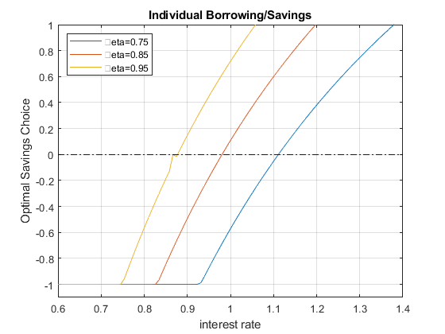
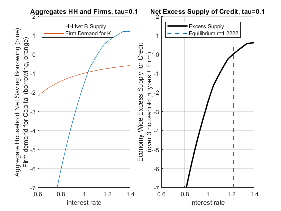
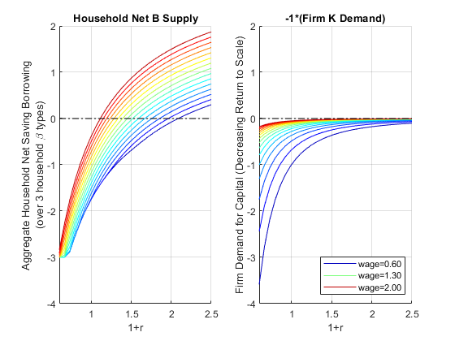
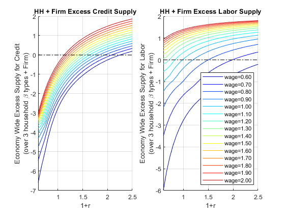

Chapter 11 Equilibrium and Policy
11.1 Equilibrium Interest Rate and Tax
Go back to fan’s CodeDynaAsset Package, Matlab Code Examples Repository (bookdown site), or Math for Econ with Matlab Repository (bookdown site).
We have previous solved the household’s asset supply problem with a borrowing constraint. And also the firm’s asset demand problem. We used first order taylor approximation to solve for the approximate equilibrium interest rate before for the firm’s asset demand problem and for the households’ savings problem without borrowing constraint. Here we find equilibrium interest rate with the constrained borrowing problem. I will analyze the effect of an interest rate (borrowing) rate subsidy for firms and borrowing households that is paid for by savings tax.
11.1.1 How do households with different \(\beta\) respond to changes in \(r\) given Borrowing Constraint?
Following our previous discussions, the household’s borrowing constrained problem is:
specifically: \(\max_b \log (Z_1 -b)+\beta_i \cdot \log (Z_2 +b\cdot (1+r))\)
with: \(b\ge \bar{b}\)
I introduce now heterogeneity in \(\beta\). There are \(N=3\) households, each with a different \(\beta_i\). Note that lower \(\beta\) household at the same interest rate \(r\) will be more interested in borrowing rather than saving. The households have the same \(Z\) and face the same \(\bar{b}\). Look at the graph below, at some interest rate, all three households want to borrow, at other rates, some want to borrow and others want to save.
clear all
% Parameters
z1 = 12;
z2 = 10;
b_bar_num = -1; % borrow up to 1 dollar
% Vector of 3 betas
beta_vec = [0.75 0.85 0.95];
% Vector of interest rates
r_vec = linspace(0.6, 1.40, 100);
% What we had from before to use fmincon
A = [-1];
q = -b_bar_num;
b0 = [0]; % starting value to search for optimal choice
% A vector to store optimal choices
rows = length(r_vec);
cols = length(beta_vec);
b_opti_mat = zeros(rows, cols);
% Solving for optimal choices as we change Z2
for j=1:1:length(beta_vec)
for i=1:1:length(r_vec)
U_neg = @(x) -1*(log(z1 - x(1)) + beta_vec(j)*log(z2 + x(1)*r_vec(i)));
options = optimoptions('FMINCON','Display','off');
[x_opti,U_at_x_opti] = fmincon(U_neg, b0, A, q, [], [], [], [], [], options);
b_opti_mat(i, j) = x_opti(1);
end
end
% Plot Results
legendCell = cellstr(num2str(beta_vec', '\beta=%3.2f'));
figure()
% Individual Demands at different Interest Rate Points
plot(r_vec, b_opti_mat)
ylim([-1.1 1]);
xlim([min(r_vec) max(r_vec)]);
hold on
plot(r_vec,ones(size(r_vec)) * 0, 'k-.');
grid on;
title('Individual Borrowing/Savings')
ylabel('Optimal Savings Choice')
xlabel('interest rate')
legend(legendCell, 'Location','northwest');
11.1.2 Aggregate Household Excess Supply along Interest Rate
When we solved for the equilibrium interest rate before, we had a firm that demanded credit and a household that supplied credit. Now we are more flexible, as shown in the chart above, households could be supplying or demanding credit. The equilibrium now is about clearing the aggregate demand and supply for the credit market considering both firms and households where households now could either be on demand or supply side. At a particular \(r\), if households all want to borrow, there will be no lending, so that particular interest rate will not clear market. We will increase interest rate until some households are willing to save. Eventually, we find the market clearning interest rate.
If the economy has on the household side exactly these three households, we can sum the aggregate demand and supply for credit at each \(r\) from the households by summing across the \(b^* (r,\beta_i )\). If households with these three different discount factors are in different proportions in the data for a particular country, we can sum up the weighted average.
- Aggregate Household Excess Supply: \(B_{hh}^* =\sum_{i=1}^3 b^* (r,\beta_i )\)
figure()
hold on;
% Aggregate demand (borrow meaning negative) and supply (saving positive) for households,
% just add sum (the 2 means sum over columns), it will sum across columns, each column is a different individual
plot(r_vec, sum(b_opti_mat, 2))
plot(r_vec,ones(size(r_vec)) * 0, 'k-.');
ylim([-5 5]);
xlim([min(r_vec) max(r_vec)]);
grid on;
title('Aggregates Households')
ylabel({['Aggregate Household Net Saving Borrowing'], ['(over 3 household \beta types)']})
xlabel('interest rate')
legend({'HH Net B Supply'}, 'Location','northwest');11.1.3 Firm Demand for Credit
We also have the aggregate Demand for the firm side based on the firm’s capital only problem, with \(\alpha_l\) for elasticity of labor, and \(\alpha_k\) for elasticity of capital, and \(L\) is fixed at 1:
- Firm Demand For Capital: \(K_{firm}^* ={\left(\frac{r}{p\cdot A\cdot \alpha \cdot L^{\alpha_l } }\right)}^{\frac{1}{\alpha_k -1}}\)
figure()
% Aggregate demand from firms (borrowing from firms)
p = 1;
A = 2.5;
alpha_K = 0.36;
alpha_L = 0.5;
L = 1;
FIRM_K = (r_vec./(p*A*alpha_K*(L^alpha_L))).^(1/(alpha_K-1));
% Individual Demands at different Interest Rate Points
plot(r_vec, (-1)*FIRM_K)
ylim([-5 5]);
xlim([min(r_vec) max(r_vec)]);
hold on
plot(r_vec,ones(size(r_vec)) * 0, 'k-.');
grid on;
title('Firm demand for Capital (borrowing)')
ylabel('Optimal Firm Choice')
xlabel('interest rate')11.1.4 Economy Wide Excess Supply for Credit (Firm + Households)
The firm is demanding credit (it is borrowing), so we put a negative sign in front of \(K\) demanded:
Economy-wide excess supply of Credit: \(\textrm{ExcesCreditSupply}(r)=B_{hh}^* (r)-K_{firm}^* (r)\)
If the term above is positive that means total saving from households is greater than total borrowing from households and firms.
Equilibrium interest rate is the interest rate where excess credit supply is equal to zero:
- to find equilibrium interest rate: find \(r^{equi}\), where at this interest rate: \(B_{hh}^* (r^{equi} )-K_{firm}^* (r^{equi} )=0\)
% Summing up to get excess credit supply
excess_credit_supply = (sum(b_opti_mat, 2) + (-1)*FIRM_K');
% find at which interest rate we are closest to zero
[excess_credit_supply_at_equi, equi_idx_in_rvec] = min(abs(excess_credit_supply));
equilibrium_r = r_vec(equi_idx_in_rvec);
lowbeta_hh_b_equi = b_opti_mat(equi_idx_in_rvec, 1);
midbeta_hh_b_equi = b_opti_mat(equi_idx_in_rvec, 2);
highbeta_hh_b_equi = b_opti_mat(equi_idx_in_rvec, 3);
FIRM_K_equi = -FIRM_K(equi_idx_in_rvec);
results_withno_tax = table(equilibrium_r, excess_credit_supply_at_equi, equi_idx_in_rvec, FIRM_K_equi, lowbeta_hh_b_equi, midbeta_hh_b_equi, highbeta_hh_b_equi);
disp(results_withno_tax)
equilibrium_r excess_credit_supply_at_equi equi_idx_in_rvec FIRM_K_equi lowbeta_hh_b_equi midbeta_hh_b_equi highbeta_hh_b_equi
_____________ ____________________________ ________________ ___________ _________________ _________________ __________________
1.0364 0.022569 55 -0.80217 -0.37092 0.29777 0.89789 Note that our equilibrium is an approximation, because we only had a grid of \(r\), the excess total supply is \(0.023\), which is close to \(0\), but not actualy \(0\). The numbers above show that our equilibrium interest rate is approximately \(1.036\), and at this equilibrium out of our three households and firm:
the firm borrows: \(0.80217\) (this is \(K\), based on which we can find total output \(Y\))
household 1 borrow: \(0.37\)
household 2 saves: \(0.30\)
household 3 saves: \(0.89\)
These sum up to approximately \(0\). Note that none of our three households is borrowing constrained at the equilibrium. We can redraw the chart earlier and show the aggregate demand and supply for credit \(B_{hh}\) from the household side:
figure()
subplot(1,2,1)
hold on;
% Aggregate demand (borrow meaning negative) and supply (saving positive) for households,
% just add sum (the 2 means sum over columns), it will sum across columns, each column is a different individual
plot(r_vec, sum(b_opti_mat, 2))
plot(r_vec, (-1)*FIRM_K)
plot(r_vec,ones(size(r_vec)) * 0, 'k-.');
ylim([-5 5]);
xlim([min(r_vec) max(r_vec)]);
grid on;
title('Aggregates HH and Firms')
ylabel({['Aggregate Household Net Saving Borrowing (blue)'], ['Firm demand for Capital (borrowing, orange)']})
xlabel('interest rate')
legend({'HH Net B Supply', 'Firm Demand for K'}, 'Location','northwest');
subplot(1,2,2)
hold on;
% Total Aggregate Net Demand for Credit at each R
plot(r_vec, excess_credit_supply, 'k', 'LineWidth', 2);
% Plot equilibrium interest rate line
plot(equilibrium_r*ones(1,10), linspace(min(excess_credit_supply), max(excess_credit_supply),10), '--', 'LineWidth', 2);
% Zero line
plot(r_vec,ones(size(r_vec)) * 0, 'k-.');
ylim([-5 5]);
xlim([min(r_vec) max(r_vec)]);
grid on;
title('Net Excess Supply of Credit')
ylabel({['Economy Wide Excess Supply for Credit'], ['(over 3 household \beta types + Firm)']})
xlabel('interest rate')
legend({'Excess Supply', ['Equilibrium r=' num2str(equilibrium_r)]}, 'Location','northwest');11.1.5 Demand and Supply for Credit with a Tax on Interest Rate
Suppose some government officials thinks we need to subsidize borrowing. They want to make it easier for households to borrow and also for firms to borrow. This sounds fantastic. Because if borrowing rate is lower for firm, the firm can borrow more in physical capital and increase output. How to pay for it? The officials decide to pay for it by taxing savings. Perhaps people with too much savings can take a cut on their interest rate earnings.
For the firm, this is just a discount on the borrowing rate. For households, this means if you save, you get your principle back next period, but you only get \(1-\tau\) fraction of the interest rate earning. But if you borrow, you only pay \(1-\tau\) fraction of your interest, rather than the full amount. Our problem remains the same as before, except that we need to resolve given the tax rate now. Let’s apply the discount in borrowing to both households that borrow and firms that borrow:
Household problem with borrowing discount and saving tax:
- \(\displaystyle \max_b \log (Z_1 -b)+\beta_i \cdot \log (Z_2 +b+b\cdot (r)(1-\tau ))\)
Firm optimal Policy function with borrowing discount:
- \(\displaystyle K_{firm}^* ={\left(\frac{r\cdot (1-\tau )}{p\cdot A\cdot \alpha \cdot L^{\alpha_l } }\right)}^{\frac{1}{\alpha_k -1}}\)
Note: this policy pays for itself because the credit market clears, so government income from the savings tax will pay for exactly its subsidy on borrowing.
Suppose \(\tau =0.10\), let’s solve for the new optimal choices and equilibrium given this tax policy. We re-use our previous codes but include now the tax:
tau = 0.10;
% Households' problem with Interest Tax and Subsidy
% A vector to store optimal choices
b_opti_mat = zeros(rows, cols);
% Solving for optimal choices as we change Z2
for j=1:1:length(beta_vec)
for i=1:1:length(r_vec)
U_neg = @(x) -1*(log(z1 - x(1)) + beta_vec(j)*log(z2 + x(1)*r_vec(i)*(1-tau)));
options = optimoptions('FMINCON','Display','off');
[x_opti,U_at_x_opti] = fmincon(U_neg, b0, A, q, [], [], [], [], [], options);
b_opti_mat(i, j) = x_opti(1);
end
end
% Firm's problem with interest tax and subsidy
FIRM_K = ((r_vec*(1-tau))./(p*A*alpha_K*(L^alpha_L))).^(1/(alpha_K-1));
% Approximate equilibrium
excess_credit_supply = (sum(b_opti_mat, 2) + (-1)*FIRM_K');
[excess_credit_supply_at_equi, equi_idx_in_rvec] = min(abs(excess_credit_supply));
equilibrium_r = r_vec(equi_idx_in_rvec);
% Grab Results
lowbeta_hh_b_equi = b_opti_mat(equi_idx_in_rvec, 1);
midbeta_hh_b_equi = b_opti_mat(equi_idx_in_rvec, 2);
highbeta_hh_b_equi = b_opti_mat(equi_idx_in_rvec, 3);
FIRM_K_equi = -FIRM_K(equi_idx_in_rvec);
results_with_tax = table(equilibrium_r, excess_credit_supply_at_equi, equi_idx_in_rvec, FIRM_K_equi, lowbeta_hh_b_equi, midbeta_hh_b_equi, highbeta_hh_b_equi);
results_table = [results_withno_tax;results_with_tax];
results_table.Properties.RowNames = {'no r tax/subsidy', ['r tax/subsidy tau=' num2str(tau)]};
disp(results_table)
equilibrium_r excess_credit_supply_at_equi equi_idx_in_rvec FIRM_K_equi lowbeta_hh_b_equi midbeta_hh_b_equi highbeta_hh_b_equi
_____________ ____________________________ ________________ ___________ _________________ _________________ __________________
no r tax/subsidy 1.0364 0.022569 55 -0.80217 -0.37092 0.29777 0.89789
r tax/subsidy tau=0.1 1.2222 0.017077 78 -0.73085 -0.051952 0.39988 0.4 The table above compares the results with the tax and without. With the tax, the approximate equilibrium interest rate has to be higher because with the tax rate at the previous interest rate more people want to borrow (given the borrowing discount) and less people want to save (given the tax). To find the point where demand equals supply, interest rate increases to incentivize households to save despite the tax. In equilibrium, we now have a much higher interest rate that clears that market. Note that compared to before, firms are borrowing less, so output is now lower due to the higher equilibrium interest rate. The policy is potentially having the opposite of its intended effect. We solve for the general equilibrium effects of policies to help us think about these unintended consequences of policies.
figure()
subplot(1,2,1)
hold on;
% Aggregate demand (borrow meaning negative) and supply (saving positive) for households,
% % just add sum (the 2 means sum over columns), it will sum across columns, each column is a different individual
plot(r_vec, sum(b_opti_mat, 2))
plot(r_vec, (-1)*FIRM_K)
plot(r_vec,ones(size(r_vec)) * 0, 'k-.');
ylim([-7 2]);
xlim([min(r_vec) max(r_vec)]);
grid on;
title(['Aggregates HH and Firms, tau=' num2str(tau)])
ylabel({['Aggregate Household Net Saving Borrowing (blue)'], ['Firm demand for Capital (borrowing, orange)']})
xlabel('interest rate')
legend({'HH Net B Supply', 'Firm Demand for K'}, 'Location','northwest');
subplot(1,2,2)
hold on;
% Total Aggregate Net Demand for Credit at each R
plot(r_vec, excess_credit_supply, 'k', 'LineWidth', 2);
% Plot equilibrium interest rate line
plot(equilibrium_r*ones(1,10), linspace(min(excess_credit_supply), max(excess_credit_supply),10), '--', 'LineWidth', 2);
% Zero line
plot(r_vec,ones(size(r_vec)) * 0, 'k-.');
ylim([-7 2]);
xlim([min(r_vec) max(r_vec)]);
grid on;
title(['Net Excess Supply of Credit, tau=' num2str(tau)])
ylabel({['Economy Wide Excess Supply for Credit'], ['(over 3 household \beta types + Firm)']})
xlabel('interest rate')
legend({'Excess Supply', ['Equilibrium r=' num2str(equilibrium_r)]}, 'Location','northwest');
11.2 Equilibrium Interest Rate and Wage Rate
Go back to fan’s CodeDynaAsset Package, Matlab Code Examples Repository (bookdown site), or Math for Econ with Matlab Repository (bookdown site).
We have solved for the problem with constrained labor and saving/borrowing choice, and the problem with saving/borrowing and tax.
11.2.1 Household and Firm’s Problem
Following our previous discussions, the household’s borrowing constrained problem is:
- specifically: \(\max_{b,\textrm{work},\textrm{leisure}} \log (Z_1 +w\cdot \textrm{work}-b)+\psi \log (\textrm{leisure})+\beta \cdot \log (Z_2 +b\cdot (1+r))\)
And the constraints are:
\(\displaystyle b\ge \bar{b}\)
\(\displaystyle \textrm{work}\ge 0\)
\(\displaystyle \textrm{leisure}\ge 0\)
\(\textrm{work}+\textrm{leisure}\le T\), where \(T\) is total time available
There are \(N=3\) households, each with a different \(\beta_i\).
For the firm, we have solved previously for the firm’s optimal choices given \(w\) and \(r\):
- \(\displaystyle \max_{K,L} \left(p\cdot A\cdot K^{\alpha } \cdot L^{\beta } -r\cdot K-w\cdot L\right)\)
11.2.2 Setting Up Parameters
Solve with three different discount rates, and different \(r\) and \(w\). First, let’s set up some parameters. The firm here has decreasing return to scale, let’s ignore the issue of profit when looking for equilibrium.
clear all
% Parameters for the Household
psi = 0.5;
z1 = 1;
z2 = 2;
b_bar_num = -1; % borrow up to 1 dollar
T = 1; % think about time as share of time in a year
% Parameters for the firm
p = 1;
alpha = 0.3;
beta = 0.5;
Aproductivity = 2.0;
% Vector of 3 betas
beta_vec = [0.85 0.90 0.95];
% Vector of interest rates
R_vec = linspace(0.60, 2.50, 30);
% Vector of wage rates, 3 wage rates for now
W_vec = linspace(0.6, 2, 15);
% What we had from before to use fmincon
A = [-1,0,0;0,0,-1;0,-1,0;0,1,1];
q = [-b_bar_num;0;0;T];
b0 = [0,0.5,0.5]; % starting value to search for optimal choice11.2.3 Household Labor Supply and Borrow/Save with different \(\beta\) and \(r\) ?
In the problem without labor supply I showed different excess supply of credit for each \(\beta_i\) household, we can do the same here for excess credit supply, but that is too much to show. I will just sum up the total across the households for both excress credit supply and total work hours:
Aggregate Household Excess Supply: \(B_{hh}^* (r,w)=\sum_{i=1}^3 b^* (r,w,\beta_i )\)
Aggregate Household Labor Supply: \({\textrm{WORK}}_{hh}^* (r,w)=\sum_{i=1}^3 {\textrm{work}}^* (r,w,\beta_i )\)
I store results in a matrix where each row correspond to an interest rate level and each color a wage rate.
% Various Matrixes to store optimal choices
rows = length(R_vec);
cols = length(W_vec);
wage_dim_len = length(W_vec);
b_opti_mat = zeros(rows, cols);
worKOpti_mat = zeros(rows, cols);
leisure_opti_mat = zeros(rows, cols);
c1_opti_mat = zeros(rows, cols);
c2_opti_mat = zeros(rows, cols);
% Solving for optimal choices as we change Z2
for i=1:1:length(R_vec)
for j=1:1:length(W_vec)
% Initialize aggregate household statistics given r and w
agg_b_supply_at_w_r = 0;
agg_work_at_w_r = 0;
agg_leisure_at_w_r = 0;
agg_c1_at_w_r = 0;
agg_c2_at_w_r = 0;
for h=1:1:length(beta_vec)
% Solve
U_neg = @(x) -1*(log(z1 + W_vec(j)*x(2) - x(1)) + psi*log(x(3)) + beta_vec(h)*log(z2 + x(1)*(R_vec(i))));
options = optimoptions('FMINCON','Display','off');
[x_opti,U_at_x_opti] = fmincon(U_neg, b0, A, q, [], [], [], [], [], options);
% Sum up at current r and w for all households
agg_b_supply_at_w_r = agg_b_supply_at_w_r + x_opti(1);
agg_work_at_w_r = agg_work_at_w_r + x_opti(2);
agg_leisure_at_w_r = agg_leisure_at_w_r + x_opti(3);
agg_c1_at_w_r = agg_c1_at_w_r + z1 + W_vec(j)*x_opti(2) - x_opti(1);
agg_c2_at_w_r = agg_c2_at_w_r + z2 + x_opti(1)*(R_vec(i));
end
% Store aggregate Household statistics
b_opti_mat(i, j) = agg_b_supply_at_w_r;
worKOpti_mat(i, j) = agg_work_at_w_r;
leisure_opti_mat(i, j) = agg_leisure_at_w_r;
c1_opti_mat(i, j) = agg_c1_at_w_r;
c2_opti_mat(i, j) = agg_c2_at_w_r;
end
end11.2.4 Firm’s Demand for Capital and Labor
The firm’s problem loops over \(r\) and \(w\), do not need to loop over \(\beta_i\). We get here:
Firm Demand For Capital: \(K_{firm}^* (r,w)\)
Firm Demand For Labor: \(L_{firm}^* (r,w)\)
% Various Matrixes to store optimal choices
rows = length(R_vec);
cols = length(W_vec);
K_demand_mat = zeros(rows, cols);
L_demand_mat = zeros(rows, cols);
% We solved before optimal choices
syms w r
% Matrix Form of linear system, same as before
B = [log(r/(p*Aproductivity*alpha)); log(w/(p*Aproductivity*beta))];
A = [(alpha-1), beta;alpha, beta-1];
% Solve linear equations, and then exponentiate, same as before
% We can use the simplify command to simplify this solution, get rid of exp and log:
lin_solu = simplify(exp(linsolve(A, B)));
KOpti = lin_solu(1)KOpti = \(\displaystyle \frac{9\,\sqrt{15}}{125\,r^{5/2} \,w^{5/2} }\)
LOpti = lin_solu(2)LOpti = \(\displaystyle \frac{3\,\sqrt{15}}{25\,r^{3/2} \,w^{7/2} }\)
% Solving for optimal choices as we change Z2
for i=1:1:length(R_vec)
for j=1:1:length(W_vec)
K_demand_mat(i,j) = subs(KOpti,{r,w},{R_vec(i), W_vec(j)});
L_demand_mat(i,j) = subs(LOpti,{r,w},{R_vec(i), W_vec(j)});
end
end11.2.5 Demand and Supply for Capital
We can graph out from the firm and household problem demand and supply for capital
figure();
% Household b (some borrow some save added up)
subplot(1,2,1);
hold on;
chart = plot(R_vec, b_opti_mat);
% Show smoother colors
clr = jet(numel(chart));
for m = 1:numel(chart)
set(chart(m),'Color',clr(m,:))
end
plot(R_vec,ones(size(R_vec)) * 0, 'k-.');
xlim([min(R_vec) max(R_vec)]);
ylim([-4, 2]);
grid on;
title('Household Net B Supply')
ylabel({['Aggregate Household Net Saving Borrowing'], ['(over 3 household \beta types)']})
xlabel('1+r')
% Firm's Graph
subplot(1,2,2)
hold on;
chart = plot(R_vec, -K_demand_mat);
% Show smoother colors
clr = jet(numel(chart));
for m = 1:numel(chart)
set(chart(m),'Color',clr(m,:))
end
plot(R_vec,ones(size(R_vec)) * 0, 'k-.');
xlim([min(R_vec) max(R_vec)]);
ylim([-4, 2]);
grid on;
title('-1*(Firm K Demand)')
ylabel('Firm Demand for Capital (Decreasing Return to Scale)')
xlabel('1+r')
legend2plot = [1 round(numel(chart)/2) numel(chart)];
legendCell = cellstr(num2str(W_vec', 'wage=%3.2f'));
legend(chart(legend2plot), legendCell(legend2plot), 'Location','southeast');
11.2.6 Demand and Supply for Labor Demand and Supply
We now generate the same graphs for Labor
figure();
% Household b (some borrow some save added up)
subplot(1,2,1);
chart = plot(R_vec, worKOpti_mat);
% Show smoother colors
clr = jet(numel(chart));
for m = 1:numel(chart)
set(chart(m),'Color',clr(m,:))
end
xlim([min(R_vec) max(R_vec)]);
ylim([0,6]);
grid on;
title('Household Work Supply')
ylabel({['Aggregate Household Work Hours'], ['(over 3 household \beta types)']})
xlabel('1+r')
% Firm's Graph
subplot(1,2,2)
chart = plot(R_vec, L_demand_mat);
% Show smoother colors
clr = jet(numel(chart));
for m = 1:numel(chart)
set(chart(m),'Color',clr(m,:))
end
xlim([min(R_vec) max(R_vec)]);
ylim([0,6]);
grid on;
title('Firm L Demand')
ylabel('Firm Demand for Labor (Decreasing Return to Scale)')
xlabel('1+r')
legendCell = cellstr(num2str(W_vec', 'wage=%3.2f'));
legend(legendCell, 'Location','northeast');11.2.7 Excess Demand for Capital and Labor
We can sum up the firm and household sides to try to find the \(r\) and \(w\) where demand and supply are equalized.
Economy-wide excess supply of Credit: \(\textrm{ExcesCreditSupply}(r,w)=B_{hh}^* (r,w)-K_{firm}^* (r,w)\)
Economy-wide excess supply of Credit: \(\textrm{ExcesLaborSupply}(r,w)={\textrm{WORK}}_{hh}^* (r,w)-L_{firm}^* (r,w)\)
figure();
% Household and Firm Excess Credit Supply, aggregated together
subplot(1,2,1);
hold on;
chart = plot(R_vec, b_opti_mat-K_demand_mat);
% Show smoother colors
clr = jet(numel(chart));
for m = 1:numel(chart)
set(chart(m),'Color',clr(m,:))
end
plot(R_vec,ones(size(R_vec)) * 0, 'k-.');
xlim([min(R_vec) max(R_vec)]);
grid on;
title('HH + Firm Excess Credit Supply')
ylabel({['Economy Wide Excess Supply for Credit'], ['(over 3 household \beta types + Firm)']})
xlabel('1+r')
% Firm's Graph
subplot(1,2,2);
hold on;
chart = plot(R_vec, worKOpti_mat - L_demand_mat);
% Show smoother colors
clr = jet(numel(chart));
for m = 1:numel(chart)
set(chart(m),'Color',clr(m,:))
end
plot(R_vec,ones(size(R_vec)) * 0, 'k-.');
xlim([min(R_vec) max(R_vec)]);
grid on;
title('HH + Firm Excess Labor Supply')
ylabel({['Economy Wide Excess Supply for Labor'], ['(over 3 household \beta types + Firm)']})
xlabel('1+r')
legendCell = cellstr(num2str(W_vec', 'wage=%3.2f'));
legend(legendCell, 'Location','southeast');
11.2.8 \(w\) and \(r\) Equilibrium
Now let’s do a final sum we want to find where both aggregate labor and capital clear.
figure();
% Aggregate Excess Supplies
excess_credit_supply = abs(b_opti_mat - K_demand_mat);
excess_labor_supply = abs(worKOpti_mat - L_demand_mat);We need to take the absolute values of the two differences above and sum them up. The equilibrium is approximately where the sum of the two matrixes is the closest to \(0\).
DS_KL_DIFF = excess_credit_supply + excess_labor_supply;
[DS_KL_diff_EQUI_val, EQUI_IDX] = min(min(DS_KL_DIFF));
[r_idx, w_idx]=find(DS_KL_DIFF==DS_KL_diff_EQUI_val);
equi_r = R_vec(r_idx);
equi_w = W_vec(w_idx);
equi_price = table(equi_r, equi_w);
disp(equi_price);
equi_r equi_w
______ ______
2.0414 0.7
% Both should be zero (if the scale of L and K are very different this would not work well)
% We can sum up the two and look for r and w closest to zero
subplot(1,2,1);
chart = plot(R_vec, DS_KL_DIFF);
% Show smoother colors
clr = jet(numel(chart));
for m = 1:numel(chart)
set(chart(m),'Color',clr(m,:))
end
xlim([min(R_vec) max(R_vec)]);
grid on;
title('abs(Excess K) + abs(Excess L)')
ylabel({['Economy Wide Excess Supply for Credit'], ['(over 3 household \beta types + Firm)']})
xlabel('1+r')
legendCell = cellstr(num2str(W_vec', 'wage=%3.2f'));
legend(legendCell, 'Location','northeast');
% Firm's Graph
subplot(1,2,2)
mesh(R_vec, W_vec, DS_KL_DIFF');
view([30.1 3.6]);
title('abs(Excess K) + abs(Excess L)')
ylabel('wage')
xlabel('1+r')